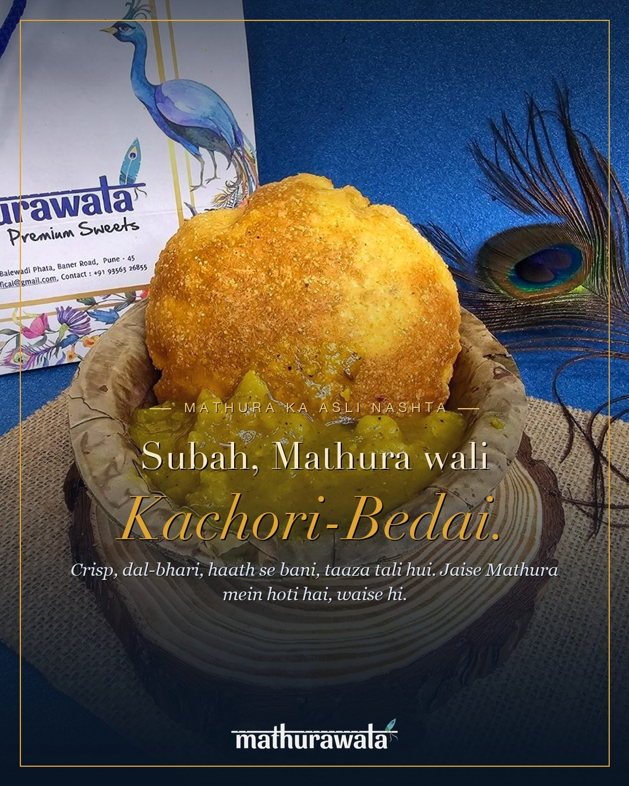

Four feed posts with finished captions, two made-live Reels to film at the counter, the posting calendar, and the Instagram profile setup. Pre-festival, always-on. Approve and we post, or tweak anything first. Nothing has gone out yet.
How to use this: the captions are copy-paste ready (Braj voice, no fluff). The images are below each post, right-click to save. Tell me what to change, or say go and I'll get these scheduled. Once Instagram posting is wired up, the autopilot can keep the queue full.
First, the profile
Set the shopfront before the posts land.
Bio:
Bharat's original food, from Mathura 🦚
Made live, every day · Pure veg
Kachori · Bedai · Chaat · Lassi · Mithai
📍 Baner, Pune · Order below 👇
Link in bio: https://mathurawalafoods.com/ (the site, which routes to order on WhatsApp and Zomato).
Story highlights to create: Menu · Made Live · Mithai · Gifting · Reviews · Our Story.
The four feed posts
Made-live craft and the heroes, all real photos.

Week 1 · Mon · 9 AMFeed
Kachori-Bedai (the hero)
Mathura ki subah aisi hoti hai. Crisp kachori aur bedai, dal se bhari, haath se bani, garam tali hui, hing wali aloo sabji ke saath. Hum ise waise hi banate hain jaise Mathura mein banti hai. Har roz, taaza.
Aaiye Baner mein, ya WhatsApp pe order karein.
Radhe Radhe 🦚
Garmi ka asli jawab. Mitti ke kulhad mein, malai se bhari, kesar aur pista ke saath, Mathura wali lassi. Ek ghoont, aur sab theek lagta hai.
Counter pe taaza banti hai. Aaiye Baner.
Radhe Radhe 🦚
Sabse asli mithaas wahi hai jo waqt maangti hai. Doodh ko ghanton dheere pakaate hain, kesar aur mewa milaate hain, thandi parosi jaati hai. Mathura ki kesar rabdi, koi shortcut nahi.
WhatsApp pe order karein.
Radhe Radhe 🦚
Hook (first 1.5s): the raw kachori dropping into bubbling ghee. Then it puffing, draining, splitting open onto the hing aloo sabji. End on the steam.
Shot list: 1) close-up ghee bubbling, 2) kachori dropped in, 3) puff (slow-mo if possible), 4) drained on the jaali, 5) split open over sabji, 6) the first bite/steam.
Mathura ki kachori aise banti hai. Bahar se crisp, andar se dal, ghee mein taaza. Sun on toh aa hi jao Baner. Radhe Radhe 🦚
#mathurawala #kachori #madelive #mathura #punefood #foodreels
Reel B · The lassi pour (10s)
Hook: thick lassi being poured into a clay kulhad, the malai folding on top, a rain of kesar and pista, the spoon standing up in it.
Shot list: 1) the pour into kulhad, 2) malai spooned on, 3) kesar-pista sprinkle, 4) the spoon-stands-up test, 5) hand lifting the kulhad.
Heritage carousel ("Mathura ka asli swad. Made live in Baner.")
Daily Stories: today's fresh batch, the counter, a poll ("kachori ya bedai?"), repost any customer tag. Reply to every comment and DM, turn DMs into pickup orders.
Best windows: breakfast 8-10, lunch 12-2, evening 6-9 (Pune time).